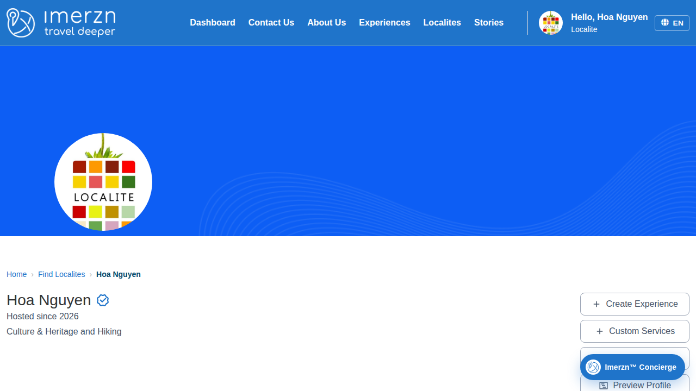

Playwright test failures
Passed: 21 | Failed: 2 | Flaky: 0 | Skipped: 0
Screenshots and errors only (passwords masked). The full report with traces is in the run's playwright-report artifact.
PRF-002 | Localite edits name, bio, and hosted experiences
localite/edit-profile.spec.ts · chromium
Error: Step "Edit name, bio, and experiences" failed: expect(locator).not.toHaveValue(expected) failed
Locator: getByRole('textbox', { name: 'First Name', exact: true })
Expected: not ""
Timeout: 10000ms
Error: element(s) not found
Call log:
- Expect "not toHaveValue" getByRole('textbox', { name: 'First Name', exact: true }) with timeout 10000ms
- waiting for getByRole('textbox', { name: 'First Name', exact: true })
at ../helpers/step.ts:17
15 | const message = error instanceof Error ? error.message : String(error);
16 | console.error(`[FAILED] ${title}: ${message}`);
> 17 | throw new Error(`Step "${title}" failed: ${message}`, { cause: error });
| ^
18 | }
19 | });
20 | }
at /home/runner/work/Imerzn-WebTest/Imerzn-WebTest/helpers/step.ts:17:13
at /home/runner/work/Imerzn-WebTest/Imerzn-WebTest/tests/localite/edit-profile.spec.ts:28:3
[cause]: Error: expect(locator).not.toHaveValue(expected) failed
Locator: getByRole('textbox', { name: 'First Name', exact: true })
Expected: not ""
Timeout: 10000ms
Error: element(s) not found
Call log:
- Expect "not toHaveValue" getByRole('textbox', { name: 'First Name', exact: true }) with timeout 10000ms
- waiting for getByRole('textbox', { name: 'First Name', exact: true })
at EditProfilePage.fillForm (/home/runner/work/Imerzn-WebTest/Imerzn-WebTest/pages/localite/edit-profile-page.ts:34:43)
at /home/runner/work/Imerzn-WebTest/Imerzn-WebTest/tests/localite/edit-profile.spec.ts:30:5
at /home/runner/work/Imerzn-WebTest/Imerzn-WebTest/helpers/step.ts:12:14
at /home/runner/work/Imerzn-WebTest/Imerzn-WebTest/tests/localite/edit-profile.spec.ts:28:3

FOL-001 | Follow a localite by email from the profile
localite/follow-localite.spec.ts · chromium
Error: Step "Open the Join the Journey dialog" failed: expect(locator).toBeVisible() failed
Locator: getByRole('main').getByRole('link', { name: /^(Follow|Unfollow)$/ })
Expected: visible
Timeout: 30000ms
Error: element(s) not found
Call log:
- Expect "toBeVisible" getByRole('main').getByRole('link', { name: /^(Follow|Unfollow)$/ }) with timeout 30000ms
- waiting for getByRole('main').getByRole('link', { name: /^(Follow|Unfollow)$/ })
at ../helpers/step.ts:17
15 | const message = error instanceof Error ? error.message : String(error);
16 | console.error(`[FAILED] ${title}: ${message}`);
> 17 | throw new Error(`Step "${title}" failed: ${message}`, { cause: error });
| ^
18 | }
19 | });
20 | }
at /home/runner/work/Imerzn-WebTest/Imerzn-WebTest/helpers/step.ts:17:13
at /home/runner/work/Imerzn-WebTest/Imerzn-WebTest/tests/localite/follow-localite.spec.ts:27:3
[cause]: Error: expect(locator).toBeVisible() failed
Locator: getByRole('main').getByRole('link', { name: /^(Follow|Unfollow)$/ })
Expected: visible
Timeout: 30000ms
Error: element(s) not found
Call log:
- Expect "toBeVisible" getByRole('main').getByRole('link', { name: /^(Follow|Unfollow)$/ }) with timeout 30000ms
- waiting for getByRole('main').getByRole('link', { name: /^(Follow|Unfollow)$/ })
at GuideProfilePage.openFollowDialog (/home/runner/work/Imerzn-WebTest/Imerzn-WebTest/pages/localite/guide-profile-page.ts:115:37)
at action (/home/runner/work/Imerzn-WebTest/Imerzn-WebTest/tests/localite/follow-localite.spec.ts:28:28)
at /home/runner/work/Imerzn-WebTest/Imerzn-WebTest/helpers/step.ts:12:20
